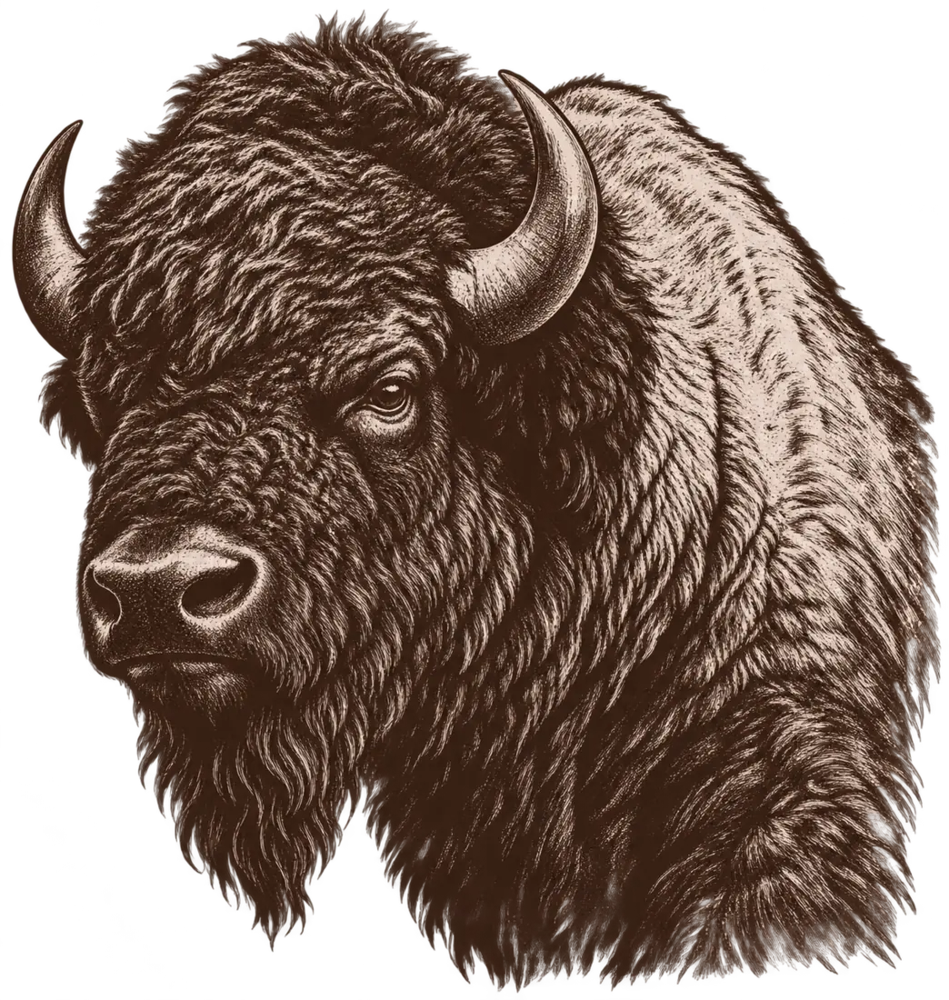

Pasture & animals
Chickens, ducks, and future livestock raised as part of a diverse, hands-on farm.

Buffalo County, Nebraska
Rainmaker Prairie Farms is a small, diversified agricultural operation built around pasture-raised animals, an expanding orchard, seasonal produce, and careful stewardship of the land.
Rooted here
Our approach is practical: care for the soil, build infrastructure that lasts, raise animals responsibly, and grow what does well in central Nebraska. The farm continues to develop season by season.
What we do
Chickens, ducks, and future livestock raised as part of a diverse, hands-on farm.
Apple, peach, pear, cherry, and nectarine trees alongside seasonal vegetables and pollinator habitat.
Eggs, produce, pickles, and other small-batch goods as the season and supply allow.
Seasonal and local
Availability changes with the weather, harvest, and the hens. Check the farmstand page before making a special trip.